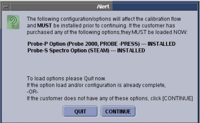

NOTE:
The Option Key Check is only done the first time that the tool is used. Any change to the option key status after the ICW has started will not be registered by the tool.
Illustration 1:
ICW Alert Pop-Up
